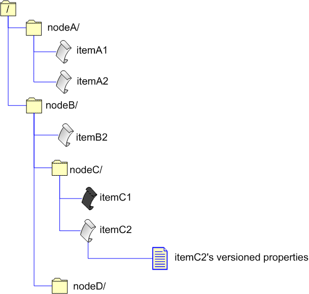

Editing Operation: commiting to a repository
The low-level layer provides for an ability to build and change tree-like hierarchies in a repository giving a developer an abstract editor. With such an editor you make edits to a repository manually (i.e. explicitly in your code): you add new nodes (directories) and items (files) under those nodes, change or delete existing ones identifying them (refering to them) by their paths in a repository. Now we are going to show this model in details.
Using the ISVNEditor Interface
ISVNEditor is the interface for editing operations, for committing changes to a repository in particular. ISVNEditor is also used to receive and apply changes from a repository during an update but this is the scope of another article.
Imagine that we have got the following tree structure in our repository:

And we want to change it to something like this:

In other words we want to:
- delete /nodeB/itemB1
- change contents of /nodeB/nodeC/itemC1
- add /nodeB/nodeC/itemC2 with some versioned properties attached to it
- add /nodeB/nodeD
Now we'll discuss how to do these changes using a commit editor. We'll assume that we are working with a local repository. First of all we should obtain such an editor to carry out our plans. We create an SVNRepository driver bounded to the node /nodeB (since all our planned changes will be performed under this node):
...
FSRepositoryFactory.setup();
String url = "file:///C:/path/to/repos/nodeB/";
SVNRepository repository = SVNRepositoryFactory.create(SVNURL.parseURIDecoded(url));
...
Here we don't use an authentication manager - a session user name will be used as an author of a commit. Getting a commit editor:
...
String logMessage = "log message";
ISVNEditor editor = repository.getCommitEditor(logMessage, null/*locks*/, true/*keepLocks*/, null/*mediator*/);
...
Now when we have got an editor we can not call any reposiotory access methods of our SVNRepository driver till we call the editor's closeEdit() method. The following code snippet demonstrates how to prepare our planned changes in a single transaction. Main steps of the editing a repository tree process are numbered to the left of the code:
...
//provide your local revision of nodeB
1 long r = ...;
editor.openRoot(r);
//provide your local revision of itemB1
2 r = ...;
editor.deleteEntry("itemB1", r);
//provide your local revision of nodeC
3 r = ...;
editor.openDir("nodeC", r);
//provide your local revision of itemC1
4 r = ...;
editor.openFile("nodeC/itemC1", r);
Now about applying text delta - text changes (only differences) made locally to itemC1. A base checksum is used to be sure that both client's base item and repository's one (of the same revision) have got the same contents what prevents from committing if a client's item is corrupted since calculated differences won't be applied correctly in this case:
String baseChecksum = ...;
editor.applyTextDelta("nodeC/itemC1", baseChecksum);
Use a delta generator to calculate differences between base and working versions of the item. The generator produces differences or delta as a sequence of diff windows of fixed size. It means that applying one such a window against item contents gives you not larger than N bytes of the output text. A default size of a window is 100K bytes.
InputStream baseData = ...;
InputStream workingData = ...;
//100Kb-window generator
SVNDeltaGenerator deltaGenerator = new SVNDeltaGenerator();
String checksum = deltaGenerator.sendDelta("nodeC/itemC1", baseData, 0, workingData, editor, true);
The delta generator passes each produced diff window to the editor calling its textDeltaChunk() method:
editor.textDeltaChunk("nodeC/itemC1", window);
When the generator is finished it calls the editor's textDeltaEnd() method:
editor.textDeltaEnd("nodeC/itemC1");
sendDelat() method returns the checksum for the working version of the item contents. This checksum may be used to verify that the delta is applied correctly on the repository side. If contents of the local working item and one in the repository do not match, checksums must also be different:
editor.closeFile("nodeC/itemC1", checksum);
5 //the second and the third parameters are the path and revision respectively
//of the item's ancestor if the item is being added with history
editor.addFile("nodeC/itemC2", null, -1);
baseChecksum = ...;
editor.applyTextDelta("nodeC/itemC2", baseChecksum);
baseData = ...;
workingData = ...;
checksum = deltaGenerator.sendDelta("nodeC/itemC2", baseData, 0, workingData, editor, true);
editor.closeFile("nodeC/itemC2", checksum);
6 editor.changeFileProperty("nodeC/itemC2", "propName1", "propValue1");
editor.changeFileProperty("nodeC/itemC2", "propName2", "propValue2");
...
//we are finished with changes under nodeC, so closing nodeC
editor.closeDir();
7 //now we are under nodeB again
editor.addDir("nodeD", null, -1);
//close nodeD
editor.closeDir();
//close root - nodeB
editor.closeDir();
In the step 5 we are adding a new item, not copying an existing one. But we could copy it, for example, if we had an item, say, itemX. In this case, if the copy ancestor is located under the same directory which our SVNRepository is bound to, we may pass a relative path, for example, itemX or nodeC/itemX. But If the ancestor is not under /nodeB we must pass an absolute in-repository path, like /nodeX/itemX. If you would like only to copy an item (file) without changes, you don't need to apply any delta - Subversion effectively creates copies of items making an actual copy on write (i.e. when a copied item is changed).
In regard to addition of a directory - parameters are like in addFile(). We are not copying a directory, just adding a new one without history.
As you see every opened/added directory (including the root one) as well as every opened/added file must be closed with the editor. The final point - closing our editor what results in committing the transaction tree into the repository:
SVNCommitInfo info = editor.closeEdit();
If transaction succeeds and this call makes our changes immutable in the repository, the editor returns an SVNCommitInfo object containing information about a new revision. However at any call to the editor it can throw an exception which means that something has went wrong. When we've got an exception from the editor we should abort it to purge the transaction like this:
try {
...
editor.addFile("nodeC/itemC2", null, -1);
} catch(SVNException svne) {
editor.abortEdit();
}
After we have closed the editor we may go on using our SVNRepository driver. The following diagram illustrates our changes step by step. Numbers in the diagram correspond to numbers of our steps in the code:

Notes:
- with ISVNEditor you edit your repository in a hierarchical way traversing a necessary subtree; that is if your driver is bound to /a and you are going to change /a/b/c/d, you can not just open d without moving down in the tree to the node a/b/c/, you have to open the root (a), then open /a/b, and then /a/b/c, after what you open /a/b/c/d.
- for all items (meaning all repository contents, that is in our model including both nodes and items) which are present in a repository and on your local machine you have to keep local revision numbers somehow, so that when you try to change an item, a repository server can check whether your local item is out of date or not.
- you don't have to apply text deltas immediately after you have opened a file; you may first open all necessary files in the way described above, then close all directories (including the root one) remaining opened in a way inverse to the one you opened them, then apply deltas to opened files and finally close files; you can not change directory properties after you've closed target directories.
- In repository edition operations you'll never need to use the following methods of a commit editor (they are irrelevant in commits, but relevant in updates):
Example On Using ISVNEditor In A Commit Operation
In the following example we'll continue discussing application of ISVNEditor in low-level commit operations. We will perform some simple commits in the following order:
- add a directory with a file to a repository,
- modify the added file,
- copy the whole added directory within a repository,
- delete both the original and copied directories.
For each of these four commit operations we'll write separate functions:
1. Addition:
private static SVNCommitInfo addDir(ISVNEditor editor, String dirPath, String filePath, byte[] data) throws SVNException {
editor.openRoot(-1);
editor.addDir(dirPath, null, -1);
editor.addFile(filePath, null, -1);
editor.applyTextDelta(filePath, null);
SVNDeltaGenerator deltaGenerator = new SVNDeltaGenerator();
String checksum = deltaGenerator.sendDelta(filePath, new ByteArrayInputStream(data), editor, true);
editor.closeFile(filePath, checksum);
//Closes dirPath.
editor.closeDir();
//Closes the root directory.
editor.closeDir();
return editor.closeEdit();
}
2. File modification:
private static SVNCommitInfo modifyFile(ISVNEditor editor, String dirPath, String filePath, byte[] oldData, byte[] newData) throws SVNException {
editor.openRoot(-1);
editor.openDir(dirPath, -1);
editor.openFile(filePath, -1);
editor.applyTextDelta(filePath, null);
SVNDeltaGenerator deltaGenerator = new SVNDeltaGenerator();
String checksum = deltaGenerator.sendDelta(filePath, new ByteArrayInputStream(oldData), 0, new ByteArrayInputStream(newData), editor, true);
//Closes filePath.
editor.closeFile(filePath, checksum);
// Closes dirPath.
editor.closeDir();
//Closes the root directory.
editor.closeDir();
return editor.closeEdit();
}
Here we use invalid revision numbers (-1) for simplifying the example since they will work for us, and that's all we need now. Of course, in real systems they'd better be real (valid) revision numbers. The same is regarding a base checksum.
3. Directory copying:
private static SVNCommitInfo copyDir(ISVNEditor editor, String srcDirPath, String dstDirPath, long revision) throws SVNException {
editor.openRoot(-1);
editor.addDir(dstDirPath, srcDirPath, revision);
//Closes dstDirPath.
editor.closeDir();
//Closes the root directory.
editor.closeDir();
return editor.closeEdit();
}
4. Directory deletion:
private static SVNCommitInfo deleteDir(ISVNEditor editor, String dirPath) throws SVNException {
editor.openRoot(-1);
editor.deleteEntry(dirPath, -1);
//Closes the root directory.
editor.closeDir();
return editor.closeEdit();
}
Now when we've got these functions we are ready to start:
public class Commit {
public static void main(String[] args) {
FSRepositoryFactory.setup();
SVNURL url = SVNURL.parseURIDecoded("file:///localhost/testRepos");
String userName = "foo";
String userPassword = "bar";
byte[] contents = "This is a new file".getBytes();
byte[] modifiedContents = "This is the same file but modified a little.".getBytes();
SVNRepository repository = SVNRepositoryFactory.create(url);
ISVNAuthenticationManager authManager = SVNWCUtil.createDefaultAuthenticationManager(userName, userPassword);
repository.setAuthenticationManager(authManager);
SVNNodeKind nodeKind = repository.checkPath("", -1);
if (nodeKind == SVNNodeKind.NONE) {
System.out.println("No entry at URL " + url);
System.exit(1);
} else if (nodeKind == SVNNodeKind.FILE) {
System.out.println("Entry at URL " + url + " is a file while directory was expected");
System.exit(1);
}
//Get exact value of the latest (HEAD) revision.
long latestRevision = repository.getLatestRevision();
System.out.println("Repository latest revision (before committing): " + latestRevision);
ISVNEditor editor = repository.getCommitEditor("directory and file added", null);
try {
SVNCommitInfo commitInfo = addDir(editor, "test", "test/file.txt", contents);
System.out.println("The directory was added: " + commitInfo);
} catch (SVNException svne) {
editor.abortEdit();
throw svne;
}
editor = repository.getCommitEditor("file contents changed", null);
try {
commitInfo = modifyFile(editor, "test", "test/file.txt", contents, modifiedContents);
System.out.println("The file was changed: " + commitInfo);
} catch (SVNException svne) {
editor.abortEdit();
throw svne;
}
//converts a relative path to an absolute one
String absoluteSrcPath = repository.getRepositoryPath("test");
long srcRevision = repository.getLatestRevision();
editor = repository.getCommitEditor("directory copied", null);
try {
commitInfo = copyDir(editor, absoluteSrcPath, "test2", srcRevision);
System.out.println("The directory was copied: " + commitInfo);
} catch (SVNException svne) {
editor.abortEdit();
throw svne;
}
//Delete directory "test".
editor = repository.getCommitEditor("directory deleted", null);
try {
commitInfo = deleteDir(editor, "test");
System.out.println("The directory was deleted: " + commitInfo);
} catch (SVNException svne) {
editor.abortEdit();
throw svne;
}
//Delete directory "test2".
editor = repository.getCommitEditor("copied directory deleted", null);
try {
commitInfo = deleteDir(editor, "test2");
System.out.println("The copied directory was deleted: " + commitInfo);
} catch (SVNException svne) {
editor.abortEdit();
throw svne;
}
latestRevision = repository.getLatestRevision();
System.out.println("Repository latest revision (after committing): " + latestRevision);
...
}
...
}
That's what you'll see if you run the program:
Repository latest revision (before committing): 0 The directory was added: r1 by 'foo' at Tue Jun 27 15:46:59 NOVST 2006 The file was changed: r2 by 'foo' at Tue Jun 27 15:46:59 NOVST 2006 The directory was copied: r3 by 'foo' at Tue Jun 27 15:46:59 NOVST 2006 The directory was deleted: r4 by 'foo' at Tue Jun 27 15:46:59 NOVST 2006 The copied directory was deleted: r5 by 'foo' at Tue Jun 27 15:47:00 NOVST 2006 Repository latest revision (after committing):
Download the example program source code.